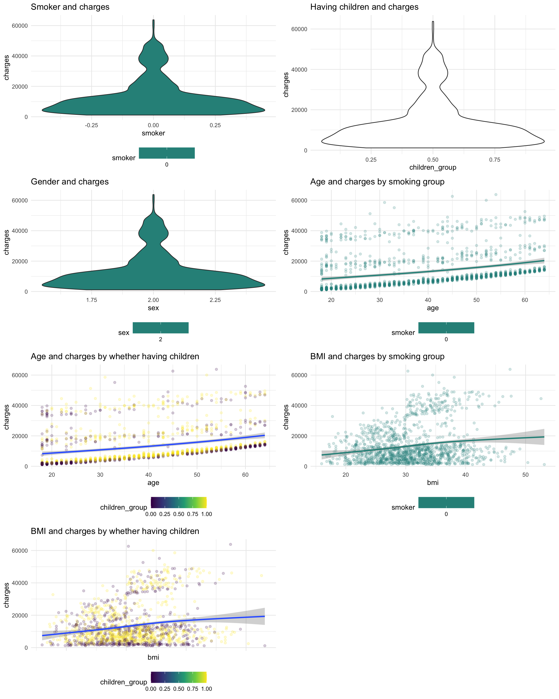
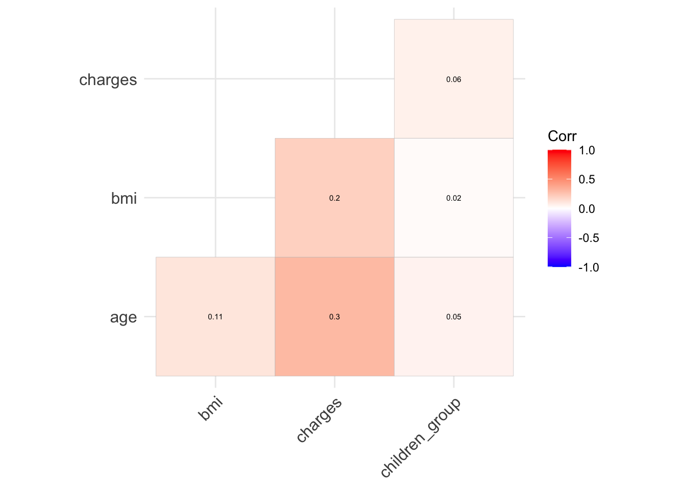
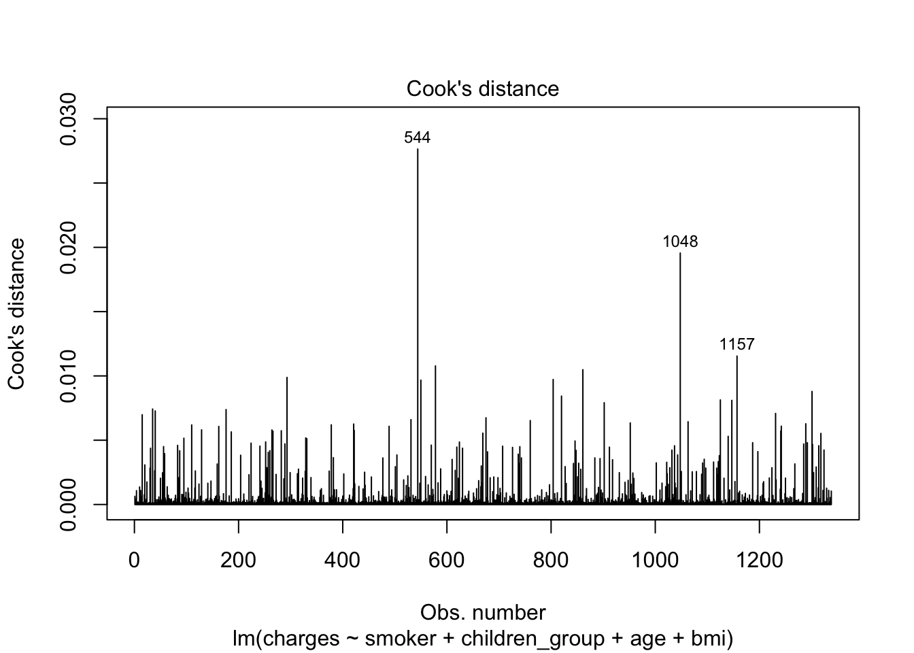

Medical cost analysis
Study of factors that affect charge of insurance
Smoker
ggplot(cost_df, aes(x = smoker, y = charges, color = smoker)) +
geom_boxplot() +
coord_flip()
YES! Smoker have significantly higher insurance cost than non smoker.
Having Children

\(H_0\): mean charges of insurance for having or not having children is the same.
\(H_1\): mean charges of insurance for having children is higher than not having children.
var.test(charges ~ children_group, data = cost_df)##
## F test to compare two variances
##
## data: charges by children_group
## F = 0.97454, num df = 531, denom df = 728, p-value = 0.7527
## alternative hypothesis: true ratio of variances is not equal to 1
## 95 percent confidence interval:
## 0.8326569 1.1428600
## sample estimates:
## ratio of variances
## 0.9745361#Equal variance
children_res <- t.test(charges ~ children_group, data = cost_df, var.equal = TRUE, alternative = "less")
children_res##
## Two Sample t-test
##
## data: charges by children_group
## t = -2.444, df = 1259, p-value = 0.007331
## alternative hypothesis: true difference in means between group 0 and group 1 is less than 0
## 95 percent confidence interval:
## -Inf -543.4854
## sample estimates:
## mean in group 0 mean in group 1
## 12136.31 13800.96At 0.05 significant level, we reject the null hypothesis and conclude that mean charges of insurance for having children is higher than not having children.
sex
ggplot(cost_df, aes(x = sex, y = charges, color = sex)) +
geom_boxplot() +
coord_flip()
\(H_0\): mean charges of insurance for male and female is the same.
\(H_1\): mean charges of insurance for male and female is different.
var.test(charges ~ sex, data = cost_df)##
## F test to compare two variances
##
## data: charges by sex
## F = 1.3972, num df = 637, denom df = 622, p-value = 2.897e-05
## alternative hypothesis: true ratio of variances is not equal to 1
## 95 percent confidence interval:
## 1.194861 1.633633
## sample estimates:
## ratio of variances
## 1.39723#Equal variance
sex_res <- t.test(charges ~ sex, data = cost_df, var.equal = FALSE)
sex_res##
## Welch Two Sample t-test
##
## data: charges by sex
## t = 2.0305, df = 1234, p-value = 0.04252
## alternative hypothesis: true difference in means between group 1 and group 2 is not equal to 0
## 95 percent confidence interval:
## 46.09322 2682.75235
## sample estimates:
## mean in group 1 mean in group 2
## 13772.76 12408.34sex_res <- t.test(charges ~ sex, data = cost_df, var.equal = FALSE, alternative = "less")
sex_res##
## Welch Two Sample t-test
##
## data: charges by sex
## t = 2.0305, df = 1234, p-value = 0.9787
## alternative hypothesis: true difference in means between group 1 and group 2 is less than 0
## 95 percent confidence interval:
## -Inf 2470.545
## sample estimates:
## mean in group 1 mean in group 2
## 13772.76 12408.34At 0.05 significant level, we reject the null hypothesis and conclude that mean charges of insurance for male and female are different. In fact, male have higher mean cost than female. This is quiet counter-intuitive.
age
ggplot(cost_df, aes(x = age, y = charges)) +
geom_smooth() ## `geom_smooth()` using method = 'gam' and formula 'y ~ s(x, bs = "cs")'
It is clear from the plot that higher age have higher cost of insurance.
bmi
## `geom_smooth()` using method = 'gam' and formula 'y ~ s(x, bs = "cs")'
It is clear from the plot that higher bmi have higher cost of insurance.
conclusion
Variables that affect charge of insurance: smoking, whether or not having children, sex, age, bmi.
collinearity examination
#model <- glm(charges ~ smoker + children_group + sex + age + bmi, data = cost_df)
cost_df_cor = cost_df %>%
select(age, sex, bmi, smoker, charges, children_group)
model.matrix(~0+., data=cost_df_cor) %>%
cor(use="pairwise.complete.obs") %>%
ggcorrplot(show.diag = F, type="lower", lab=TRUE, lab_size=2)
There is no collinearity between any of the variables.